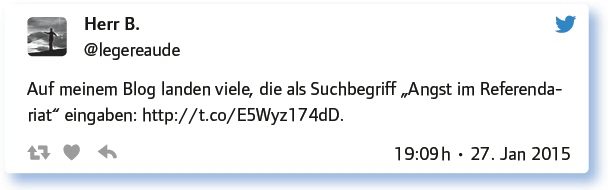
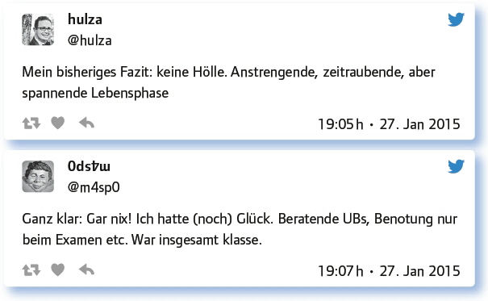

von Peter Jochum
John Hattie bezeichnet in einem Interview die Lehrerausbildung als „weltweit die am meisten notleidene Einrichtung, die ich kenne“, und fährt fort: „Sie ist teuer, und ihre Effekte sind zweifelhaft“.1 Diese Einschätzung stützt tendenziell die gefühlte „Hölle“ Referendariat. Dabei sind Junglehrer hungrig. Sie sollen es besser machen. Lehrerausbildung stellt die Weichen für die nächsten dreißig Jahre Schul- und Unterrichtsentwicklung. Welche Handlungsfelder ergeben sich für Lehramtsstudium und Referendariat – und welchen Beitrag kann Digitalisierung dabei leisten?
Dschungelcamp oder was war die Hölle in deinem Referendariat?
Das Referendariat wird häufig als eine Zeit der „Dauerkrise“ erlebt. Hauptkritikpunkte sind: disparate Ansprüche, instransparente Bewertungen, asymmetrische Kommunikation, einseitige Defizitorientierung, schlechtes bzw. fehlendes didaktisches Feedback sowie zu viele bewertende bzw. zu wenig beratende Anteile.
Unterschiedlichste Ansprüche zu befriedigen von 2 Mentoren, 3 Fachleitern, Studienseminarleiter, Schulleiter, Klassenlehrer.
Meine Hölle waren nur die Fahrtwege zwischen Seminaren und Ausbildungsschule und mein eigener Perfektionismus.
18 Lehrproben mit je 20 bis 30 Stunden Vorbereitungszeit, die danach sekundenweise seziert wurden, eine überhöhte Bedeutung haben.
„Dschungelcamp“ trifft es gut – und obwohl ich ein Star war, hat mich keiner rausgeholt.
Es gibt viele Problemfelder: Seminarqualität, Mentorenqualifizierung, Schulorganisation und (un-)gewollter psychischer Druck.
Eher von den Formalien her ein Dschungel. Schulbürokratie ist (k)ein extra Kurs.
Ständige, ununterbrochene Beobachtung KANN sehr hemmend sein.
Das Gefühl „zwischen allen Stühlen zu sitzen“ war nicht schön.
Es gibt einfach Referendartypen, die sehr schwierig sind: http://t.co/zeknZLRk58
Unser Fachleiter präsentierte immer nach der Stunde „das perfekte Tafelbild“, statt mit uns vorher Lösungen zu suchen.
Das Prüfungs-„Sperrfeuer“. Hab‘s als Dauerzustand empfunden.
Willkür, mangelnde Transparenz, Machtspiele – Bewertungen, von denen deine Jobchancen abhängen, sind oft undurchsichtig.
Die Hölle war der eigene Anspruch; die damit verbundene Wahnsinnsarbeit. Ach ja und die geringe Aufwandsentschädigung.
Das Thema Angst scheint bei Referendaren durchaus eine Rolle zu spielen. Dabei treten unterschiedliche Ängste auf.

Aber es gibt auch Ausnahmen:

Wo Schatten ist, ist auch Licht: So schlecht war es nun auch wieder nicht, oder? Deine Glanzstunden!
Positive Glanzpunkte bilden komplementär das Erleben von Kooperation und Vernetzung unter den Referendaren/Kollegen, eigene unterrichtspraktische Erfahrungen, positives Feedback sowie eine faire, transparente und konstruktive Beurteilung und auch Hilfe durch Mentoren.
Mentor, der mit mir vorher die Planung der Unterrichtsstunden durchsprach und hilfreiche Verbesserungen vorschlug.
Glanzstunden? Wenn die Kollegen dankbar für Ideen, Anregungen und Beistand sind.
Die Kooperation und Zusammenhalt unter den Referendaren war toll.
AG und Schulband – das machte wirklich Spaß, weil man selbstständig arbeiten konnte und viel lernte: learningbydoing.
Wenn ich gesagt oder gezeigt bekomme, dass ich was gut gemacht habe, dass man mir vertrauen kann.
Direkter Einstieg in eigenverantwortlichen Unterricht. Schön, dass viel Vertrauen in Tätigkeit entgegengebracht wurde.
Wir hatten noch Zeit, anzukommen. Wenig Druck zu Beginn. Das habe ich auch gebraucht. Kooperation mit anderen Referendaren, gemeinsame Planungen, Kicker und Bier mit Fachleiter, Exkursionen mit Seminar(en).
Transparente, kriteriengeleitete, progressive Bewertung, hilfreiche Mentoren.
Stunde, deren Entwurf und Durchführung weit auseinander waren, weil ich auf aktuelle Klassensituation einging – Glanzstunde.
Viele feste Freundschaften, die sich gebildet haben. Die Erkenntnis, dass einen danach nichts mehr schocken kann.
Was ist das Ziel des Referendariates? Was würdest du ändern, wenn du könntest?
Als Ziel des Referendariats werden weniger die Planung des idealen Unterrichts oder ausgefeilte didaktische Überlegungen angesehen, sondern vielmehr konkrete Unterrichtshilfen, das Üben und Improvisieren. Symptomatisch dafür ist der Vorschlag eines Teilgebers, als Lehrprobe eine Vertretungsstunde mit 30-minütiger Vorbereitungszeit planen zu lassen.
Wie schafft man Selbstständigkeit? Durch Ermutigung, Zutrauen und größtmöglichen Freiraum.
Ziel laut unserer Ausbildungsordnung: „Selbstständig den Beruf der Lehrerin oder des Lehrers ausüben zu können.“
Ändern kann man nur sich selbst. Ich hätte mir von Fachleitern etwas mehr Respekt gegenüber Referendaren gewünscht.
Ziel ist es wohl, Praxiserfahrung zu sammeln und zu reflektieren.
Ein Berufseinsteigermodell mit allmählich ansteigender Stundenzahl nach dem Ref einführen. Das wär mal was.
Konkret: Eine Lehrprobe als „spontane“ Vertretungsstunde, mit halber Stunde Vorbereitung.
Die Fähigkeit zur eigenständigen Verantwortung und Reflexion von Unterricht.
Ganz konkrete Praxisausrichtung, Portfolio von Stunden und Unterrichtsreihen erstellen, mehr peer2peer.
Referendariat und Studium verzahnen, um Praxisschock zu vermeiden.
Vorzeigestunden, bei denen man Punktabzug bekommt, weil man sich nicht strikt an den Plan hielt, sind weltfremd.
Ausbildungszeit wieder verlängern, wirklich begleiteter Unterricht im 1. Jahr, keine Benotungen (!) vor dem Examen.
Transparente Bewertungen. Klare Ansprüche. Je nach Fachleitung „schwimmt“ man …
Die Ausbildungslehrer sollten ein Danke vom Land erhalten. Sie leisten viel!
Seminare sinnvoller gestalten, „Lehrproben“ vielleicht auch mal spontan durchführen, Schüler-Lehrer-Beziehung in den Vordergrund stellen.
Mehr PRAXIS in UNI, im Referendariat: Themen ‚digitale Bildung‘ und ‚Inklusion‘ integrieren.
21st century skills bei (zukünftigen) Lehrenden fördern, damit sie diese später auch bei Lernenden fördern.
Erlernen von transparenter Bewertung, Entwicklung von Bewertungskritierien und deren Kommunikation.
Wir brauchen verbindliche Kriterienkataloge als Transparenzbögen für die Refs.
Üben von improvisiertem Unterricht. Unterricht = 10 % Vorbereitung + 90 % Jazz.
Wurdest du im Studium auf das Referendariat vorbereitet? Was war gut, was hat gefehlt?
Die Verzahnung von Studium und Referendariat erscheint eher locker – eine Tatsache, die von den Teilgebenden unterschiedlich bewertet wird: Während manche eine berufspraktische Orientierung das Fachstudiums rundheraus ablehnen, wird von anderen die universitäre „Contentlawine“ ohne Schulbezug bemängelt.
Nicht wirklich, dazu waren die Praxisphasen zu kurz. Lehrerausbildung läuft bei vielen Unis aber auch nur „nebenbei“.
Schulisch gesehen nicht wirklich. In jedem Fach ein kurzes Schulpraktikum: das ist zu wenig.
Sorry, aber das Studium ist ein Studium und keine Berufspraxisvorbereitungsagentur.
Nein, aber das ist gut so. Der Schrei nach Praxisbezug ist Quatsch. Fachstudium lehrt andere Dinge: http://t.co/5W6RSN2urJ
Studium hat nichts mit dem Schulleben zu tun. Und das ist gut so.
Im Studium geht es um Fachwissenschaften, um Entwicklungspsychologie etc. Das Referendariat sollte für Praxis zuständig sein.
Nein, mein Studium hatte quasi null Praxisanteile. Bin zu alt.
Vereinfacht gesagt: Die reinste Contentlawine, die man nicht braucht.
Leider fehlt vielen Ausbildern an der Uni der enge Bezug zur Schule / zum Schulalltag – das vermisse ich im Nachhinein.
Ich habe mich im Studium als Wissenschaftler gesehen. Im Referendariat als Praktiker. Heute sehe ich mich als beides.
Hat dir das Referendariat im Hinblick auf den Lehrerberuf geholfen oder ist da noch Entwicklungsspielraum?
Das Referendariat wird als hilfreich bewertet, aber die Teilgeber sehen einen deutlichen Entwicklungsspielraum …
Ja. Hat geholfen. UND: Da war und ist noch Entwicklungsspielraum.
Hilfe bei: Stressresistenz, Selbstdisziplin, Nein-Sagen, Organisation des Alltags.
Ich hab tatsächlich gelernt, das perfekte Tafelbild zu machen.
Klar hat das Referendariat geholfen. Aber wie beim Autofahren: Hinterher lernt man es (meist) richtig.
Ja, deutlicher Spielraum. Die größte Entwicklung macht man wohl in den ersten 4 Berufsjahren durch und nicht im Referenariat.
OECD: „Das Unterrichten vor der Klasse lernen Lehrer in Deutschland kaum …“
Nun, das Ref ist eine kontinuierliche, von außen geplante persönliche Dauerkrise. Entwicklung beginnt weitgehend später.
Referendariat: Werkzeuge erlernt. Beruf: Umgang mit Werkzeugen üben, neue kennenlernen, ausprobieren, eigene entwickeln, austauschen.
Das Referendariat war für mich dort am besten, wo ich die vermeintlichen Ausbildererwartungen ignorierte – und sie das genossen.
Ja, denn es hat mir die Grenzen des Möglichen gezeigt. Positiv wie negativ.
Verkopfte, an den Haaren herbeigezogen pädagogisierte Zauber-Vormachstunden haben nichts gebracht. Realität ist anders. Aber nach dem Studium hätte ich noch nicht (gut) unterrichten können! Die viele Arbeit im Referendariat hat sich bezahlt gemacht.
Können digitale Medien beim Referendariat helfen? Waren sie sogar Thema im Seminar? Oder ist dir Papier doch lieber?
Digitale Medien scheinen im Referendariat nach wie vor eine geringe Rolle zu spielen. Vorwiegend werden schulische „Eigengewächse“ wie lo-net oder Moodle als „Data dump“ eingesetzt. Wer Glück hat, lernt den konstruktiven Einsatz von Smartboard und Tablet. Blogging und digitales Portfolio, das Teilen, Organisieren, Vernetzen über soziale Medien bleiben Desiderate der Lehrerausbildung.
In meiner Ausbildung waren digitale Medien nicht existent. Ich habe den Mitreferendaren/Fachleitern „dieses Internet“ gezeigt.
Das war kein Thema im Seminar. Aber es sollte sehr wichtig sein! Ich vermisse es und würde gern das HS wechseln. Geht nur nicht.
Bis jetzt sehr wenig. Tafelbild meint Kreidestaub. Dass ich meine Mitschriften auf dem Tablet mache, ist das digitalste.
Habe den Eindruck, viele Referendare meiden die Technik, wenn möglich. Zu hohes „Risiko“ im Unterricht (Funktionsfähigkeit …)?
Stelle als Betreuer viel Material in die Cloud, das fokussierte Vorbereitung ermöglichen sollte.
Im Seminar werde ich darauf achten, dass Studierende sich digital vernetzen und unterstützen können.
Ja, es wurde gezeigt und man hatte auch die Möglichkeit, es auszuprobieren. Beamer und Internet waren da.
Unsere Kommunikationsplattform im Päd.-Seminar war Lo-net2. Da mussten wir jede Woche hineinschauen.
Nutze gerne Digitales, leider insgesamt noch zu wenig. Am meisten lerne ich aber nicht in der Ausbildung, sondern über Blogs.
Na, wenn der #EDchatDE für die Referendare verpflichtend wird, dann bringt das Digitale viel im Referendariat.
Stundenpläne und PDFs gibt’s im LO-Net, aber Moodle ist autodidaktische Selbstbeschäftigung
Ich habe das Glück, per Losverfahren in der Zusatzqualifikation des Seminars gelandet zu sein, wo wir Smartboard, Excel, Audiobearbeitung etc. erlernen, aber so etwas wie Evernote müsste ich mir dennoch „nebenbei“ beibringen.
Kommunikation bei mir über WA-Gruppe und Austausch über Google Drive.
Digitale Medien gab es zu meiner Zeit kaum. Meine Ausbilder waren immerhin schon mit Telefon ausgestattet.
Wir brauchen mehr Umgang mit digitalen Medien in der Lehrerausbildung AUSRUFEZEICHEN.
Fazit:
Insgesamt wird das Referendariat im Hinblick auf den Lehrerberuf als hilfreich bewertet – allerdings mit viel Luft nach oben. Das insgesamt positive Fazit verwundert nicht, denn alleine die anderthalb- bis zweijährige Verweildauer im Studienseminar führt, völlig unabhängig von der Qualität der Ausbildung, zwangsläufig schon zu einem Erfahrungs- und Kompetenzzuwachs. Anders gesagt: Das Referendariat – als Institution – schult; man kann schlechterdings nicht nichts lernen.
Generell sollte es im Referendariat nicht um die Planung der perfekten Stunde gehen, sondern darum, Erfahrungen mit Planungsüberlegungen zu sammeln, die Struktur von Unterricht kennenzulernen, sich ein Inventar fundamentaler Werkzeuge anzueignen, das Zusammenspiel unterschiedlicher Planungsaspekte zu erfahren, individuelle Planungsstrategien zu erproben, unterschiedliche Vorgehensweisen zu vergleichen und in der Umsetzung das Agieren vor der Klasse zu üben und zu reflektieren.
Weitere Infos zu diesem Thema finden sich z. B. hier:
DIE ZEIT (2008): Referendariat – Der Klassenkampf
Deutschlandfunk (2009): Die Angst geht immer mit
Süddeutsche Zeitung (2010): Lehrer im Referendariat „Die schlimmste Zeit meines Lebens“
Bildungsklick (2010): Problemzone Referendariat
Subjektiver Einzelbericht aus einem Lehrerforum (2011)
WAZ – Der Westen (2014): „Das Referendariat hat mich an meine Grenzen gebracht“
Link zum vollständigen Protokoll: